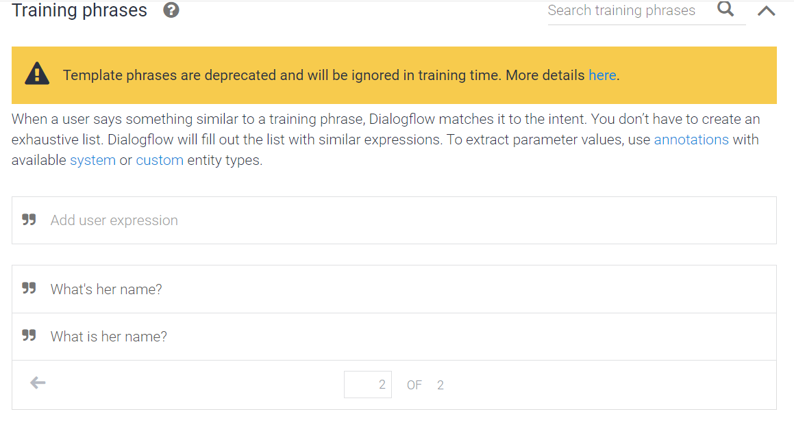

우리나라는 영어를 일상에서 사용하지 않는 EFL(English as Foreign Language) 환 경이라 수업 시간에 영어로 의사소통할 기회가 많지 않다. 이로 인해 학습자의 말하기 관련 학습 동기와 성취도가 떨어질 수 있다는 문제점이 있다. 영어 말하기 교육 환경의 한계를 보 완하기 위해 의사소통 능력을 향상할 수 있는 초등 영어 학습 챗봇을 제작하고자 했다.
따라서 본 연구의 목적은 ‘초등 영어 학습 챗봇을 직접 개발하여 학습자가 시공간의 제약 없이 자기 주도적으로 영어를 학습할 수 있도록 도움을 주는 것' 이다. 연구 대상을 3학년 이상의 초등학생으로 선정한 것은 교육과정상, 학교에서 영어를 처음 배우는 단계인 만큼 영어 말하기 학습에 흥미를 느끼는 게 필요하다고 판단했기 때문이다.
이처럼 직접 개발한 챗봇과의 상호작용을 통해 학습자는 영어 말하기 학습을 어렵고 부담스러운 과정이 아니라 하나의 재미있고 쉬운 놀이 활동으로 인식할 수 있다. 이를 통해 영어 말하기에 대한 부담감과 불안감을 줄여 학습 흥미와 의지를 높일 수 있다.
콘텐츠 팀의 주 업무는 챗봇에 입력할 대화 내용인 스크립트 작성이다. 챗봇 스크립트 작성을 위해 먼저 설문조사 결과를 분석했다. 설문조사 결과는 영어 말하기 듣기 읽기 각 영역의 능숙도가 매우 높은 학생부터 아직 미숙한 학생까지 다양했다. 그래서 모든 학생이 자신의 영어 능숙도에 맞춰 챗봇을 사용할 수 있도록 챗봇의 난이도를 상, 중, 하로 나누었다. 난이도에 맞 추어 대화 주제와 답변의 길이 고급 어휘 사용으로 차별점을 두었다 난이도 (상, 중, 하) 를 기 준으로 총 3개의 챗봇을 개발하기로 계획했다. 다음으로 스크립트 작성을 위해 교육부 고시 제 호 2020-255 [별책 14권] 2015개정 영어과 교육과정, 2020 교육부 교육과정을 분석했고 학습자가 실제로 사용하는 천재교육, YBM 교과서를 분석했다. 교육과정과 교과서 분석 후 난 이도와 실생활에서 사용하기 용이한 ‘자기 및 친구 소개하기’, ‘직업 묻고 답하기’, ‘식당에서 음식 주문하기’의 주제를 선정했다. 챗봇 제작 기술의 한계로 모든 챗봇의 응답과 학습자의 답변을 정답으로 처리하기 위해서는 연구자가 나올 수 있는 답변을 예상해 모든 옵션을 작성 해야 했다. 그래서 스크립트를 작성할 때 챗봇의 응답은 학습자가 긍정, 부정, 중도 반응을 모 두 포괄하여 반응할 수 있도록 작성했고, 경우의 수를 생각해 나올 수 있는 적절한 학습자의 응답을 모두 작성하고자 노력했다. 모든 스크립트의 표현과 단어는 2015개정 영어과 교육과 정과 교과서를 기준으로 사용했다.
챗봇 스크립트와 함께 챗봇의 구성 또한 기획했다. 아직 초등학생이라 영어 능숙도가 높지 않고 각 챗봇을 처음 사용하면 어떤 주제로 대화가 시작될지 모르기 때문에 챗봇 상단에 고정 지시사항을 작성했다. 학습자는 지시사항을 보고 해당 챗봇의 대화 주제와 학습 목표를 알 수 있다. 또 대화 중에도 대화 주제나 활동이 바뀌면 한국어 지시사항을 제시해 학습자가 대화 흐름을 잘 따라갈 수 있도록 했다. 학습자의 흥미와 집중력을 높이기 위해 이미지도 적극적으로 사용했다. 기술의 한계로 텍스트와 이미지가 동시에 나올 수 없어, 왼쪽 메인 챗봇(EngChat)에서 텍스트로 대화를 진행하고 오른쪽 도우미 챗봇에서 이미지를 보여주는 구성으로 제작했다. 챗봇에 사용된 이미지는 콘텐츠팀에서 자체 제작했다. 'EngChat'의 캐릭터는 챗봇 수준별로 머리 위에 새싹, 출기, 꽃이 달려 있다. 챗봇 난이도가 점차 상승한다는 의미와 학습자도 이에 따라 성장한다는 의미를 담았다. 또 챗봇1(EngChat1)에서 학습자가 챗봇에 이름을 물어보면, 챗봇 캐릭터 이미지가 나와 실제로 대답하는 분위그를 조성한다. 챗봇2(EngChat2)에서 화가, 수영선수 이미지는 직업을 묻고 답하기 위한 이미지로 사용했다. 챗봇3(EngChat3)의 메뉴판 이미지는 학습자가 음식점에서 실제로 주문하는 듯한 느낌을 줄 수 있다.
챗봇1은 가장 쉬운 난이도로 제작했다. 학습자가 챗봇을 처음 사용하는 경우를 고려하여 '자기 및 친구 소개하기'를 주제로 정했다. 천재교과서 4학년 영어 교과서 1단원, 함순애 외 10인, 2022 Lesson 1. My Name is Eric과 YBM 3~4학년 영어교과서 1단원, 최희경 외 8인, 2018 Lesson 1. Hi! I'm Sena 를 참고하여 스크립트를 작성했다. 다양한 영어 표현 학습을 위해 학습자가 챗봇에게 자신의 이름과 학년을 소개하는 것 외에도 챗봇의 친구 이미지를 보여주고 학습자가 이름을 묻는 과정도 넣었다. 아래 사진은 실제 노션에서 작성한 챗봇1의 스크립트 일부다. 챗봇의 'What grade are you in?' 질문에 학습자가 할 수 있는 응답 경우의 수를 적은 것이다.
챗봇2는 중간 난이도의 챗봇으로, 대화 주제는 '직업 묻고 답하기'로 선정했다. YBM 5학년 영어 교과서 6단원, 김혜리 외 9인, 2022 Lesson 6. What does He Do?을 참고하여 스크립트를 작성했다. 아래 사진은 학습자가 이미지에 나온 수영선수의 직업을 물으면 챗봇이 답하는 상황이다. 학습자가 이미지 속 인물의 직업을 물어볼 때 사용할 수 있는 여러 표현을 예상해 작성했으며, 이후 챗봇이 학습자에게 수영할 수 있는지 묻는 말에 학습자가 가능 여부(능력)를 말할 때 사용할 수 있는 표현을 크게 '가능하다', '불가능하다', '잘 모른다'로 예상해 스크립트를 작성했다.
챗봇 3개 중 난이도가 가장 어려우며, 주제는 실생활에서 영어를 사용하는 상황과 유사하도록 '식당에서 음식 주문하기'로 선정했다. 앞서 챗봇1과 챗봇2는 챗봇과 학습자가 지시사항에 따라 대화하는 형식이었지만, 챗봇3의 챗봇은 점원, 학습자는 손님으로 관계를 설정해 역할극을 하듯 대화가 진행된다는 점에서 차이가 있다 YBM 6학년 영어 교과서 2단원 김혜리 외 9인, 2022 Lesson 2. What Would You Like?를 참고하여 스크립트를 작성했다. 아래 사진은 챗봇이 주문받는 3가지 표현 중 하나를 사용해 말했을 때 학습자가 메뉴판 이미지에 제시된 스파게티 세 종류 중 하나를 주문하기 위해 할 말을 예상해 작성한 것이다. 교과서에 나온 표현을 기반으로 여러 경우의 수를 생각했다.
ㄱ. Dialogflow
챗봇 스크립트를 입력하고 챗봇이 구동하게 하기 위해 Dialogflow를 활용했다. A.I. 챗봇의 응답, 사용자의 예상 답변을 작성했다. 개중 A.I. 챗봇의 응답은 텍스트와 이미지로 구성되었으며, 이미지의 답의 경우 json을 활용했다. 챗봇 에이전트 또한 Dialogflow에서 무료로 제공하는 Web Demo와 Dialogflow Messanger을 container로 활용했다.
ㄴ. 웹 제작
웹사이트의 견본으로 타모디자인에서 무료로 배포하는 디자인을 사용했다. 타모디자인의 웹디자인을 활용, HTML, CSS, JS언어를 사용하여 현 연구 목적에 부합하게 커스터마이징을 했다.
ㄷ. 플랫폼 구축
모든 이용자가 사용하기 위해서는 웹 배포 및 플랫폼을 구축해야 한다. Python의 Flask 프레임워크를 활용하여 웹을 배포하고 Render과 Git을 활용하여 플랫폼을 구축하였다.
기술팀에서는 웹 구성 및 디자인, Dialogflow script 입력(text, image), 음성 인식 기능 활용, 그리고 웹사이트 배포 및 플랫폼 생성을 진행했다.
기업기술혁신PBL 3팀과의 협업 논의 과정에서 기술적 역량의 부족을 절감해 자체적인 기술팀을 구성하기로 했다. 기술팀은 유영락, 이도경, 조서빈으로 구성하여 챗봇 제작을 담당하기로 했다. 기술팀은 챗봇 제작을 위해 자체 스터디를 진행했다. 우선 챗봇 스크립트 제작에 활용될 Google의 무료 배포 플랫폼 Dialogflow에 대한 스터디를 진행하여 Dialogflow를 챗봇에 활용하는 법을 학습했고, HTML4, CSS, JS를 사용한 웹디자인 활용 학습, 서버 연동 사이트인 Render에 대한 스터디를 순차적으로 진행했다. 잉챗 웹사이트 제작 작업에는 웹사이트 제작에 활용된 HTML5, CSS, HS, 챗봇 입력에 활용된 JSON, 웹 배포에 활용된 Python 등 총 5가지 언어가 활용됐다. HTML5를 활용하여 웹사이트에 넣을 항목을 구성, CSS를 사용하여 웹사이트의 폰트 설정, 웹 디자인, 배치를 진행하였고, JS를 활용해서 부가적인 효과를 줬다. Dialogflow는 텍스트를 기본적으로 제공하는 기능이 있지만, 이미지 파일을 제공해주는 서비스가 따로 없기 때문에 커스텀 페이로드(custom payload)를 활용하여 Dialogflow가 사용하는 JSON파일 형식에 맞추어 그림을 삽입했다. 마지막으로 웹 배포에는 Python을 사용했다. Python 3.10.0 버젼을 활용하였으며, 이번 프로젝트에서 필요한 가벼운 웹의 배포기능을 제공하는 Flask 프레임워크를 활용하였다.
영어 학습을 자기 주도적으로 시간과 공간에 제약받지 않게 하고자 했다. 우리가 구현할 수 있는 기술을 생각하게 되었고 실현 가능성 있고 영어로 상호작용이 가능한 영어 챗봇개발을 하고자 했다. 가장 적절한 방법으로 만들고자 하여 처음 시작은 두 가지 방법을 세웠다. 첫 번째 후보는 온라인 동영상 플랫폼에 올라오는 영어 학습 콘텐츠 추천이다. 챗봇이 학습자의 영어 수준을 파악하여 효과적으로 실력을 끌어올리는 데 적절한 관련 교육 영상들을 보여주는 방식이다. 두번째는 영어 챗봇 자체 개발이다. 학습자와 챗봇의 상호작용을 통해 직접 영어로 대화하는 방식이다. 두 가지 방법 다 고려하고 만들어보기로 하였지만 시간상의 문제로 우리의 처음 연구 취지에 맞는 방향으로 영어 챗봇 자체 개발을 선택하였다. 그리하여 영어 회화에 중점을 두고 음성인식이 가능한 챗봇으로 방향을 잡았다.
팀 회의 과정에서 Google Assistant의 지원 서비스 종료 소식을 알게 되면서 챗봇이 말을 하는 방식은 활용하기 어렵다고 판단했다. 이에 챗봇은 텍스트, 혹은 초등학생들이 직관적으로 활용하기 좋은 그림을 업로드하는 방식으로 대화하고, 초등학생 화자는 대화, 그리고 텍스트 입력을 모두 사용하는 방식을 채택하기로 했다.
웹 배포는 Python의 Flask라는 Web Framework를 활용한다. 파이썬을 사용하여 상대적으로 쉽고 간단하게 제작된 웹사이트를 바포할 수 있게 지원한다. 현 챗봇은 다양한 기능이 필요한 상황이 아니기 때문에 가볍게 배포할 수 있는 Flask가 가장 적합하다고 판단하여 이용하였다.
웹 배포만 하면 개발자를 제외한 이용자들이 웹사이트에 접근할 수 없기 때문에 플랫폼을 생성해야 했다. 이를 위해 github와 render을 활용했다. render은 무료 플랫폼 구축을 도와주는 웹사이트이고, github는 코드를 연동하는 작업을 도와주는 웹사이트이다.
Script 작성은 앞서 언급했던 Google Dialogflow를 활용했다. Intent, Entities를 활용하여 응답자가 먼저 말하거나 작성할만한 문장들을 작성하여 챗봇의 답변들을 두 가지 방법으로 작성했다. 먼저 text의 경우 Dialogflow에서 제공하는 서비스가 있었기 때문에 이를 활용했다. 그러나 Dialogflow는 무료 버젼으로 이미지 업로드 서비스를 따로 제공하지 않았다. 대안으로 Custom Payload를 활용하여 JSON 언어를 사용하여 작성하였다. 세 종류의 챗봇을 만들었기 때문에 3종류의 Intent를 생성했다.


마지막으로 웹사이트 제작 및 디자인은 타모 디자인에서 제공하는 무료 HTML5 웹사이트를 활용하여 커스터마이징을 진행한 후, 잉챗 웹사이트에 필요한 요소들을 사용하여 만들었다. Website에 들어가야 할 요소로 대문페이지, 챗봇 페이지 3종류 각각 한 페이지씩, 그리고 Creators 페이지 등으로 구성하였다.
연구의 초기 목적은 영어 교육에서 소외된 계층의 초등학생 맞춤형 영어 학습 챗봇을 개발하고자 했다. 학원, 괴외 등 학교 수업 외에 영어 교육 기회를 얻을 수 없는 세종시 초등학생을 대상으로 설문조사와 만족도 조사를 하여 조사를 통해 실제 교육환경과 영어 학습 실태를 파악하고 맞춤형 챗봇을 개발하고자 했다. 먼저 10개의 세종시 소재 아동센터와 교내 사회봉사단에 협조 요청 연락을 했다. 하지만 코로나 감염병 사태로 외부인의 출입이 제한되었고, 미성년자인 아동 대상의 연구라 센터에서 연구에 조심스러운 입장을 밝혔다. 아동센터 섭외가 실패하여 연구 대상을 연구자 주변의 전국 초등학생을 대상으로 다시 확대해 팀원들의 지인들에게 부탁했다. 결과적으로 초등학생 2~6학년 대상으로 설문조사를 진행했고 조사결과를 바탕으로 챗봇을 제작했다.
챗봇에 입력할 학습 콘텐츠 제작에 필요한 학습자의 학습 상황 및 요구를 파악하고자 설문지를 자체적으로 개발 및 제작했다. 제작 시 교육부 고시 제 2020-255호[별책 14권] 2015 개정 영어과 교육과정, 2020, 교윱부의 초등학교 성취기준을 참고하여 초등학생이 어렵지 않게 답변할 수 있도록 총 7문항으로 제작했다. 각 문항의 세부내용은 다음과 같다. 언제부터 영어를 배우기 시작했고 어떤 영역을 주로 학습했는지, 최근 일주일 동안 얼마나 자주 영어를 배우기 시작했고 어떤 영역을 주로 학습했는지, 최근 일주일동안 얼마나 자주 보거나 실제 사용해 본 경험이 있는지 묻는 영어 학습 챗봇 경험 여부 파악 문항(5번)을 만들었다. 추가로 말하기/듣기/읽기 영역의 능숙도를 자가평가 하는 문항(6번)도 제작했다. 자가평가지만 평가 기준을 최대한 명확하게 제시하기 위해, 2015 개정 교육과정 초등 3~4학년과 5~6학년의 영어 말하기, 듣기, 읽기 성취기준을 적절히 섞어 '나는 ~할 수 있다.'의 형식으로 재구성한 후 '맞다' 또는 '아니다'로 답하도록 구성했다. 마지막으로 챗봇 제작시 해당 단원 내용 및 수준을 참고하고자 현재 학습 중인 교과서 단원 정보 파악 문항(7번)을 만들어 설문지에 포함했다.
콘텐츠팀이 분석한 설문 응답 결과는 다음과 같다. 영어를 배우기 시작한 연령대는 평균 6세로 말하기와 듣기를 주로 학습한 것으로 나타났다. 최근 1주일 동안 얼마나 자주 영어로 말했는지 묻는 문항에는 평균 4일정도 영어를 사용하고 있다고 응답했다. 영어를 어떤 방식으로 공부하는지 묻는 문항에는 학교 수업, 학원 및 과외, 자습을 통해 공부하고 있다는 응답이 가장 많았다. 영어 학습 챗봇을 들어보거나 실제 사용해 본 경험이 있는지를 묻는 말에는 모두 사용해 본 경험이 없다고 답했다.
다음은 말하기, 듣기, 읽기 영역의 전반적인 능숙도를 파악하기 위한 문항이다. 능수 고 평가 문항을 제시하고 맞다 또는 아니다 로 답하도록 했다. '나는 영어 알파벳과 단어의 소리를 듣고 잘 따라 말할 수 있다' 에서 6명 모두 맞다 라고 답했다 말하기 영역을 종합하 면 5명의 학생이 우리 연구팀이 만들고자 하는 챗봇과 대화가 가능한 수준으로 확인됐다. '나 는 알파벳과 단어를 듣고 소리 차이와 의미를 구별할 수 있다' 에서 5명이 맞다 라고 답했다. 듣기 항목도 학생들이 교육과정 이상의 듣기 수준을 갖추고 있었다. 나는 '쉽고 간단한 단어 나 문장을 읽고 의미를 이해할 수 있다' 는 6명 모두 맞다 라고 답했다. 읽기 영역도 챗봇의 응답을 읽고 이해할 수 있는 수준이었다. 마지막으로 부모가 생각하는 자녀의 영어 말하기, 듣기, 읽기 능력에 관한 답변을 받았다. 설문조사 결과 영어 능숙도는 다소 다양하게 나타났 으나 모든 학습자의 영어 학습 수준은 평균 이상으로 판단됐다. 설문조사의 결과를 바탕으로 챗봇의 난이도를 상, 중, 하로 조정하여 제작했다. 영어 학습 수준이 평균 이상이므로 설문 응 답자는 챗봇을 사용하는 데 지장이 없다고 보고 추후 챗봇 만족도 조사 실시 대상자로 선정했 다.
챗봇을 제작한 후 실제 사용자의 챗봇 만족도를 알아보기 위해 만족도 조사를 실시하였다. 만족도 조사 대상자는 챗봇 개발 전 실시한 설문조사 응답자 중 희망자에게 만족도 조사를 했다. 만족도 조사는 조사 대상자 정보, 챗봇 사용 후 챗봇의 학습 목표 달성 여부, 챗봇 만족도(초등학생, 부모님)를 알아볼 수 있도록 문항을 구성했다. 설문 작성 및 취합, 결과 데이터 분석의 용이성을 위해 '네이버 폼'을 사용했다. 아래 사진에서 보이듯 링크에 접속하여 링크를 통해 잉챗을 사용한 후 만족도 조사를 진행한다. 만족도 조사는 12월 7일부터 12월 10일 오후 6시까지 진행했다. 만족도 조사 희망자는 총 4명으로 조사를 할 수 있는 네이버 폼 링크를 12월 7일 발송했었다.

3개월의 연구 결과물로 초등 영어학습 챗봇을 만들었다. 영어학습 챗봇인 잉챗을 사용할 수 있는 웹사이트를 제작했다. 메인 홈페이지 상단은 학습 챗봇에 관한 소개글이 있고 하단에는 제작자 및 제작 의도, 기대효과가 있다. '초등 영어 학습 챗봇' 의도에 맞춰 제작자 및 제작 의도를 쓰고 기대효과는 '영어 말하기, 듣기 능력 상승' 내용을 적었다. 왼쪽 바 하단은 챗봇의 사용 대상, 챗봇의 목적, 장점을 요약해 기술했다. 페이지의 왼쪽 메뉴 아래에 잉챗1, 잉챗2, 잉챗3을 구분해 각 카테고리에서 학습할 수 있게 구성됐다. 메인 페이지 오른쪽에 '잉챗' 캐릭터 이미지를 넣었다. 학습 단계를 1부터 3까지 올라감에 따라 각기 다르게 잉챗 캐릭터 3개를 만들었다. 챗봇의 생김새는 학습 단계별로 머리 위에 있는 새싹이 꽃이 피는 모습으로 차별점을 두었다. 영어 난이도는 상중하로 나눠 학습자가 잉챗 1에서 3까지의 학습과정을 순차적으로 진행할 수도 있고 원하는 난이도를 선택할 수도 있다.
위 그림의 챗봇은 대화용 챗봇 '잉챗'과 별개로 도우미 챗봇이 있어 한 페이지에 챗봇 2가지가 있다. 오른쪽 잉챗은 음성인식이 가능하여 학습자가 음성으로 답하고 텍스트로 답변하는 대화 진행 메인 챗봇이다. 모든 잉챗은 텍스트로 답변하고 학습자는 음성과 텍스트 입력을 사용하여 답할 수 있다. 기술의 한계로 한 개의 채팅창에 텍스트와 이미지가 동시에 나올 수 없어 도우미 챗봇은 이미지가 나오도록 따로 채팅창을 만들어 구성했다. 도우미 챗봇은 그림이나 텍스트로 답하고 학습자는 텍스트로만 도우미 챗봇에 입력해야 한다. 주제별 영어학습 대화는 잉챗으로 진행하고 추가적인 도움이 필요하거나 지시사항에 따라 이미지를 보기 위해 도우미 챗봇을 활용한다.
잉챗을 처음 사용하는 학습자에게 도움을 주고자 상단에 지시사항을 잉챗 1, 2, 3 모두 공통으로 고정했다. 첫 번째 챗봇의 지시사항은 '챗봇에 자신의 이름(영어이름)과 학년을 소개하고, 챗봇이 제시하는 친구의 이름을 물어보세요' 이다. 지시사항으로 잉챗을 처음 접하더라도 잉챗의 대화 흐름을 미리 알 수 있도록 했다. 챗봇1은 가장 쉬운 난이도로 '자기/선생님 소개하기' 주제이다. '도우미 챗봇의 왼쪽 잉챗1 창 아래에 있는 마이크 버튼을 누르고 잉챗1에게 먼저 인사를 건네보세요'라고 대화 시작을 위해 학습자에게 지시사항을 전달한다. 도우미 챗봇1, 2을 입력하면 잉챗 캐릭터와 잉챗의 친구 이미지를 볼수 있다. 학습자는 도우미 챗봇에 1을 입력해 잉챗 1을 만나 지시사항에 따라 이름을 묻는다. 잉챗1은 자신을 소개하고 학습자의 영어이름을 물어본다. Dialogflow는 한글이름을 인식하지 못하기 때문에 학습자가 영어 이름이 없다면 공통적으로 'Sam'이라는 이름을 사용하도록 유도했다. 다음은 잉챗이 학습자의 학년이 무엇인지 물어본다. 이에 맞는 답변을 학습자는 답한다. 우리 팀은 학습자가 답할 수 있는 모든 응답 변수를 고려하여 챗봇에 예측한 답변을 입력했다. 우리가 예측한 변수 중 하나를 답변한다면 그 다음 대화로 넘어간다. 마지막으로 챗봇에 2를 입력해 이미지에 나온 친구의 이름을 학습자가 묻고, 인사를 건네면 대화가 끝난다. 모든 대화가 끝나면 잉챗은 공통적으로 ‘Good! / Very good! / Great! / Excellent! / You did a good work! / Good job! / Well done!’ 중에서 랜덤으로 학습자에게 칭찬을 해주어 학습 의욕을 높이고, 다른 챗봇 사용을 권유하며 지속적인 학습을 하도록 유도한다.
잉챗2의 지시사항은 'Engchat 2에게 그림 속 남자의 직업에 대해 묻고 답한 뒤 수영을 할 수 있는지 답해 보세요'이고 주제는 '직업 묻고 답하기'이다. 잉챗 2는 중간 난이도이다. 잉챗1과 마찬가지로 도우미 챗봇의 지시에 따라 왼쪽 창 아래 있는 마이크 버튼을 눌러 인사를 건네며 대화를 시작한다. 도우미 챗봇에 1을 입력하여 나온 화가이미지를 보고 잉챗에게 'Yes'라고 말한 뒤 학습자가 화가라고 답한다. 다음으로 도우미챗봇에 2를 입력하고 나온 이미지를 보고 남자의 직업이 무엇인지 역으로 잉챗에게 물어본다. 챗봇은 남자의 직업인 수영선수를 말해주고 학습자에게 수영을 할 수 있는지 물어본다. 수영을 할수 있는지 없는지에 대해 학습자가 답변하고 공통으로 입력된 챗봇의 격려가 나오며 대화가 종료된다.
잉챗3의 지시사항은 '이 곳은 음식점입니다. 당신은 손님, EngChat3은 직원입니다. 직원에게 메뉴판에 있는 음식을 주문하고, 음식 맛을 설명해보세요.'이다. 주제는 레스토랑에서 주문하기/ 가격묻기/ 수량 물어보기이다. 3개의 잉챗 중 난이도가 가장 어렵다. 앞서 챗봇1과 챗봇2는 챗봇과 학습자가 지시사항에 따라 대화하는 형식이였던 반면 챗봇3는 챗봇이 종업원, 학습자가 손님의 역할로 대화가 진행된다. 도우미 챗봇의 지시에 따라 창 아래에 있는 마이크 버튼을 누르고 종업원에게 먼저 인사를 건네면서 대화를 시작한다. 오른쪽 도우미챗봇에 1을 누르면 스파게티 메뉴판이 나온다. 확인 후 잉챗에게 'yes'라고 대화하고 대화를 이어간다. 스파게티 메뉴판을 보고 주문을 한 학습자는 직원(잉챗)에게 품절되었다는 이야기를 듣고 다시 메뉴를 선택한다. 메뉴를 주문하고 도우미챗봇에게 2를 눌러 음료 메뉴판을 볼 수 있다. 학습자는 음료 메뉴 이미지에 나온 음료를 직원에게 주문한다. 주문 표현을 반복적으로 말해 표현을 연습할 수 있다. 주문한 음식이 나왔다는 상황을 가정하고 음식을 가져다 준 직원(잉챗)에게 학습자가 감사의 인사를 한다. 또 직원(잉챗)의 질문에 따라 맛을 설명할 수 있도록 구성했다.
영어학습 스크립트를 만들면서 학습자와 대화중에 일어날 수 있는 모든 상황을 고려했다. 만약 잉챗이 학습자의 잘못된 답변을 하였을 경우 잉챗이 학습자에게 'Sorry? / What did you say?/ Would you say that again?' 중에서 랜덤으로 제시하여 다시 학습자가 맞는 표현을 할 수 있도록 했다. 챗봇의 스크립트 길이가 난이도에 따라 조정되어 주제 1개당 걸리는 대화시간은 모두 다르다. 챗봇 1은 난이도 하로 약 초등학생 학습자를 위한 챗봇이기 때문에 학업의 동기유발을 위하여 대화 길이를 짧게 설정했다. 우리는 이 초등 영어 학습 챗봇의 사용으로 학교 수업 이외에 영어를 접할 수 있는 기회를 제공하고자 했다. 그리하여 잉챗 사용자의 영어 말하기와 듣기 학습에 있어 보탬이 되기를 기대한다.
아래는 잉챗 웹사이트 링크로, 직접 들어가서 챗봇을 사용할 수 있다. (2023년 6월 이후 사이트가 사라진 상황이다.)
만족도 조사는 시간상의 관계로 6학년 학생 총 1명이 응답했다. 응답자의 학습 상황은 영어로 인사, 이름, 몇학년인지, 친구의 이름과 다른 사람의 직업 묻기, 본인이 할 수 있는(없는) 일에 대해 말하기, 음식의 맛 표현이 가능하다.
학습자가 잉챗(EngChat)을 사용한 후에 어떤 부분에서 도움을 받았는지에 대해서는 어디에서나 장소에 구애받지 않고 영어로 대화할 수 있는 것이 좋다고 답했다. 잉챗(EngChat) 웹사이트에 대해서는 조금 그렇지 않다 답했다. 챗봇과 대화하는 방식을 묻는 말에는 조금 그렇지 않다, 잉챗(EngChat, 왼쪽 챗봇)과 도우미(오른쪽 챗봇)의 역할에 관해 묻는 만족에서는 조금 그렇지 않다, 잉챗(EngChat)과의 대화 주제가 흥미로웠고, 다른 주제로도 대화하고 싶다는 항목에는 조금 그렇지 않다, 잉챗(EngChat)과의 대화가 실력향상에 도움이 되었는지는 보통이라고 답했다. 전반적으로 잉챗을 사용하면서 불편감을 보였다. 잉챗(EngChat)을 사용하면서 느낀 점은 챗봇이 학습자의 말을 알아듣지 못했다고 답했다.
학습자의 부모의 대상으로의 만족도 조사 결과이다. 자녀가 잉챗(EngChat)을 재미있고 흥미롭게 사용했는지 묻는 말에 조금 그렇지 않다, 잉챗(EngChat)이 정식으로 서비스된다면 자녀들이 지속해서 사용하게 할 의향이 있냐는 질문에는 보통이다, 잉챗(EngChat)을 사용하면서 자녀들이 평소 영어 공부를 할 때보다 더 집중하기 수월한지 묻는지에 대해서는 보통이다 라고 답했다. 다음은 웹사이트에 대한 만족도를 묻는 항목이다. 잉챗(EngChat)이 어떤 챗봇인지, 제작 의도가 무엇인지 등은 웹사이트를 통해서 효과적으로 알 수 있었는지의 물음에는 매우 그렇다, 웹사이트 구성이 만족스러웠는지는 조금 그렇다, 잉챗(EngChat)을 사용하기에 쉬웠고 직관적이었는지의 항목에는 조금 그렇지 않다는 것으로 긍정적인 답변이 많았다
추가적으로 잉챗(EngChat)에서 만족스러웠던 부분과 개선했으면 하는 부분을 주관식으로 답했다. '챗봇이라는 도구 자체의 편리성이 만족스러웠습니다 그러나 1)웹사이트가 직 관적이지 않아 어떠한 경로로 메뉴판이 나 그림을 보고 이야기하는지 곧장 알 수 없었습니 다, 2) 여러번의 시도 후에 알게 되었습니다, 3)챗봇이 아이의 말을 계속 못 알아들었습니다, 4)그래서 한 문장 말하고 나서 다음 대화로 넘어가기가 어려웠습니다.' 만족도 결과를 통해서 개발한 챗봇의 대화 기능에 문제가 있어보인다. 자연스럽게 대화가 이어지기 어렵고 챗봇의 구성이 헷갈린다는 평이 있었다.
우선, 챗봇의 옵션을 일일이 입력해야 하는 번거로움이 있었다. 이는 학습자가 입력할 수 있는 모든 경우의 수를 고려하여 연구자가 예측해 적어야 한다는 한계점이 명확히 존재하였기 때문이다. 또 Google Assistant 지원 서비스 종료로 챗봇의 응답이 음성으로 설정할 수 없었다. 그래서 텍스트로만 출력하는 방식을 활용했다. 두 가지를 모두 출력할 수 있게 하는 방식의 구현은 어려웠다. 마지막으로, 시간이 촉박하여 챗봇에 음성인식과 이미지 응답 설정 두가지를 모두 구현하는 것이 제한됐다.
챗봇 기술의 한계로 자연스러운 대화가 가능한 챗봇을 개발하는 것이 어려웠다. 첫번쨰, 학습자의 다양한 반응에 챗봇은 한가지 대답만 할 수 있다. 학습자의 반응에 따라 챗봇이 다양한 대답을 하는 챗봇은 기술의 한계로 만들지 못했다. 그래서 긍정, 중립, 부정 반응에 포괄하여 답변할 수 있는 대답을 입력하여 보완했다. 두번째, 학습자의 예상 답변을 모두 적어 입력하는 방식으로 스크립트를 작성했다. 헤번째 다양한 영어 표현이 들어가지 않았다. 2015 교육과정과 교과서를 토대로 교과서 표현을 연습할 수 있는 챗봇이 목적이었기 때문에 교과서에 나오지 않은 표현은 제외되었다. 또 모든 응답을 직접 작성해야 하기 때문에 다양한 영어 표현을 넣는 데 한계가 있었다.
아동학습자 챗봇 체험 만족도 조사 결과 실제 사용자에게 다음과 같은 문제점이 있었다. 첫 번째, 챗봇 사용법을 알기 어려웠다 .직관적으로 사용법이 판단되지 않아 어떠한 경우로 메뉴판이나 그림을 보고 이야기하는지 알기 어려웠다. 여러번의 시도 후에 사용밥을 알게 되었다고 언급했다. 두번 째, 챗봇이 아이의 말을 잘 알아듣지 못했다. 사용자는 챗봇이 말을 못알아들어 대화를 이어가는 것이 힘들다고 언급했다 .챗봇 프로그램 자체의 음성인식 한계와 예상 응답 입력의 한계가 존재하는 것으로 나타났다.
시간적/기술적 한계를 해결하여 학습자가 키워드를 입력하였을 때 자동완성 기능을 추가한다면 답변의 선택지의 다변화가 가능할 것이다. 현재 챗봇의 답변의 다변화는 가능하지만 각각의 Flow가 다시 통합할 수는 없는 상태이다. 이를 개선한다면 다양한 방식의 학습용 챗봇 제작이 가능할 것이며, 챗봇과 학습자 간의 자연스러운 대화흐름이 형성될 수 있을 것이다.
send 메세지 보내기 파일에 액세스할 수 있는 사용자 확인 중 챗봇의 답변을 음성, 텍스트 모두 구현할 수 있는 방안에 대해 연구할 필요성이 있다. 학습용 챗봇의 경우 음성 답변과 문자 답변이 모두 존재하는 것이 학습자가 학습하기에 용이하기 때문에 개발을 하면 좋을 것이다. 하나의 챗봇에 음성인식 기능과 이미지 답변 기능을 모두 넣을 수 있다면 이번처럼 두가지 챗봇이 아니라 하나의 챗봇에 모든 기능이 담길 수 있을 것이다. 또 하나의 챗봇에 이 두가지를 모두 착안하면 독립적인 챗봇이 생성 가능할 수 있을거라 기대된다.
다음 연구는 교육 소외계층 학생들을 미리 섭외하여 학습 상황과 필요에 맞느 학습 챗봇을 개발하고 싶다. 섭외 기간을 늘리고 미리 기관과 접촉하여 섭외할 필요성이 있다. 장기 연구 프로젝트로 진행하면 기관을 섭외할 시간과 기회가 많을 것이다. 또 감염병 사태가 잦아든다면 챗봇 개벌 전 교육봉사를 통해 실제적인 학습 상황과 능숙도를 알아보고 학생 맞춤형 챗봇을 기획하고 싶다. 그리고 챗봇을 만든 후 교육봉사에 활용하여 챗봇의 만족도, 활용도, 효과성을 연구하고 싶다. 학습자 그룹과의 지속적인 만남을 통해 더 다양한 데이터를 수집할 수 있다. 교육 봉사 활용으로 챗봇의 활용도 높일 수 있다. 연구자가 직접 챗봇 시연을 하며 학습자 그룹에게 챗봇 이해도를 높이고 더 즉각적이고 실제적인 조사를 할 수 있다.
아동학습자 챗봇 체험 만족도 조사 결과에 따른 후속 연구 제안은 다음과 같다. 먼저 챗봇의 사용법을 알기 어렵다는 문제점이 있다. 대화내용 지시사항처럼 메뉴바에 사용법을 추가하는 것이 필요하다. 학습자가 먼저 메인 챗봇과 도우미 챗봇의 사용법을 알아보고 챗봇과 대화를 시작해야 문제점이 해결될 수 있다. 또 챗봇이 학습자의 답변을 못 알아듣는 문제점이 있다. 챗봇의 음성인식 한계가 존재한다. 이 한계를 극복하기 위한 보완점은 가능한 답변의 갯수를 더 추가하고 발음이 비슷한 경우의 답변도 입력하여 인식률을 높이는 방법이 있다. 후속연구에서 만족도 조사 결과에 따라 챗봇을 발전시킨다면 학습자의 편의가 증가할 것이다.
'잉챗'은 초등학생이 겪는 영어 학습의 어려움 해소와 영어 학습 목적 달성에 도움이 될 수 있다. 첫 번쨰, 언제 어디서나 영어 학습이 가능하다. 영어는 조기교육, 학원, 과외 등 사교육 의존도가 높은 과목이다. 교육에서 소외된 학습자는 사교육비 부담과 시간과 공간의 제약 등의 영어 학습 장애요인으로 학습이 쉽지 않다. 챗봇은 링크만 있다면 누구나 시공간의 제약 없이 사용할 수 있다. 또 챗봇 사용으로 영어 말하기, 듣기 능력을 향상시킨다. 교과서 기반의 공인된 내용을 학습할 수 있기 때문에 초등학교 영어 학습에 도움이 된다. 잉챗으로 영어 학습 장애요인을 극복할 수 있다.
두 번쨰, 학습 소외 계층 학생들의 기초 영어 학습에 도움이 된다. 학습 소외 계층 학생들은 학교 수업 외 학습 기회를 얻기 힘들다. 이때 개발한 챗봇 잉챗을 무료로 배포한다면 영어 교육의 진입장벽을 낮추어 학습 기회가 부족한 학생들도 영어 학습을 할 수 있다. 앞서 언급했듯 챗봇은 누구나 무료로 언제 어디서나 사용할 수 있다. 또 챗봇과 대화하며 실질적인 영어 말하기 듣기 능력을 향상할 수 있다. 챗봇을 통해 기초 영어 학습을 수월하게 진행하도록 유도할 수 있다.
세 번째, 챗봇을 통한 자기주도 학습이 가능하다. 학년이 올라갈수록 학습량과 내용이 어려워지며 입시 목표로 수업이 진행된다. 이는 학습자의 학습 동기를 저하시키는 요인이다. 앞서 언급했듯이 우리나라는 영어가 일상적으로 쓰이지 않는 EFL(English as Foreign Language) 환경으로 수업시간에 영어로 의사소통할 기회가 많지 않다. 그래서 학생들의 말하기 관련 학습 동기와 성취도가 떨어질 수 있다는 문제점이 있다. 영어 학습 챗봇을 통해 이러한 문제를 극복하고 자기주도 학습을 할 수 있다. 학습자는 챗봇과 상호작용을 통해 영어 학습을 딱딱하고 지루한 수업이 아닌 하나의 놀이 활동으로 인식할 수 있다. 이러한 인식 변화는 영어 학습을 할 때 긴장과 불안감을 줄여주고 흥미를 유지하며 학습을 지속할 수 있다.
네 번쨰, 테크놀로지 기반 영어 학습 콘텐츠를 개발했다. 앞서 보았듯 우리나라의 영어 수업은 영어로 의사소통할 기회가 적고 사교육 의존도가 크다. 이런 문제점의 해결책으로 테크놀로지 기반 영어 학습 콘텐츠를 기획한다는 점에서 유의미하다. 4차 산업혁명 시대에 교육 환경도 빠르게 변화하고 있다. 하지만 테크놀로지 기반 영어 학습 콘텐츠의 발전과 수업활용의 발전은 더디다. 그리고 실제 학습에 적용하는 사례도 적다. 테크놀로지 기반 영어 학습 콘텐츠를 초등 영어 학습에 적용시킨 챗봇 '잉챗'을 개발했다.
첫 번쨰, 다양한 주제로 챗봇 생성이 가능하다. 잉챗 코드는 오픈소스로 공유된 상태다. 오픈소스는 많은 사람에게 사용이 자유롭도록 공유되어있는 코드다. 그래서 누구나 코드를 무료로 다운로드해서 사용할 수 있다. 이는 비전문가, 즉, 코드를 배우지 않은 사람도 챗봇과 웹사이트 생성이 가능하다는 것을 의미한다. 자신의 목적에 따라 코드를 변형해 자신이 원하는 챗봇을 만들 수 있다. 잉챗은 '초등 영어 학습용 챗봇'이지만 코드를 이용해서 쇼핑몰 Q&A 답변 챗봇, 수학 학습용 챗봇 등 다양한 챗봇을 제작할 수 있다. 필요에 따라 사업, 교육과 같은 더 넓은 분야에서 활용할 수 있다.
두 번쨰, 챗봇 입력 내용에 따라 다양한 대상이 학습 가능하다. 이미 만든 잉챗에게 자료를 입력하면 다양한 대상에게 학습이 가능하다. 지금은 초등학교 영어 스크립트를 입력했지만 중학교, 고등학교 영어 스크립트를 작성해 입력하면 챗봇을 통한 학습이 가능하다. 영어뿐만 아니라 중국어, 프랑스어 등 스크립트만 제작한다면 다양한 학습자 그룹에게 챗봇 서비스를 제공할 수 있다.
세 번째, 무료 영어 학습용 챗봇 소스를 많은 사람에게 공유할 수 있다. 현재 이미 수많은 영어 학습용 챗봇이 존재한다. 대부분의 '영어 학습용 챗봇'은 유료인 상황이다. 무료로 제공해주는 영어 학습용 챗봇 소스는 블로그, 오픈소스, 유튜브 등에서 전무했다. 하지만 잉챗은 오픈소스로 공유된 무료 챗봇이기 때문에 영어 학습용 챗봇이 필요한 사람이 검색을 통해 쉽게 접근할 수 있다. 또 개발자들이 이 자료를 보고 브랜치를 생성하고 제작자에게 요청하는 등의 방법을 통해 챗봇의 보완 및 업그레이드를 얼마든지 할 수 있다. 이렇게 되면 무료 영어 학습용 챗봇 소스를 많은 사람에게 공유하고 이번 연구에서 생각하지 못했던 아이디어를 얻어 차후에 발전시킬 수 있을 것이다.
**English version will be written in the future.